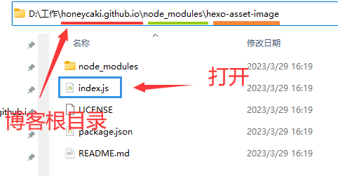
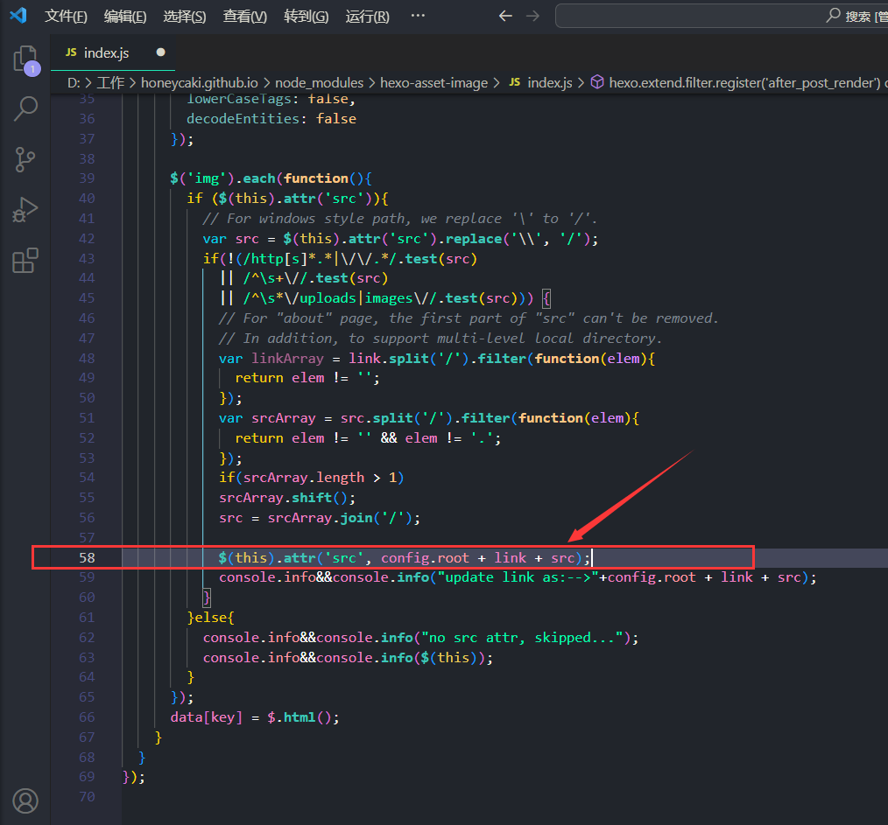
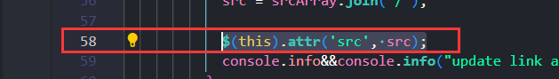
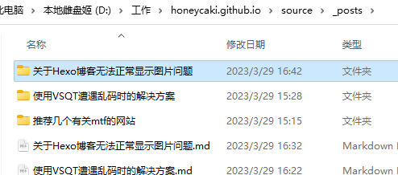
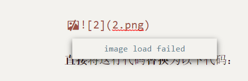
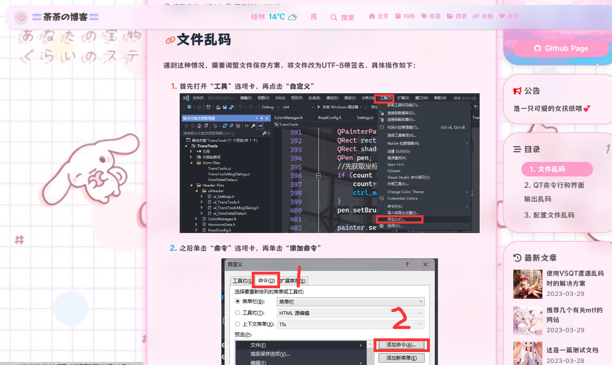

关于Hexo博客无法正常显示图片问题
本文参考：https://zhuanlan.zhihu.com/p/542101567 进行步骤简化
使用npm安装 hexo-asset-image
npm install hexo-asset-image --save
打开index.js
打开你的博客根目录，找到node_modules文件夹，再找到hexo-asset-image文件夹，直接打开目录下的index.js

对代码进行修改
找到代码第58行看到类似的字眼$(this).attr，

直接将这行代码替换为以下代码：
$(this).attr('src', src);

完事，记得保存。
修改根目录下的_config.yml文件
回到你的博客根目录，找到 _config.yml文件并打开
按Ctrl+F键搜索关键词：post_asset_folder
找到对应的值，把
post_asset_folder: false
改为
1 | post_asset_folder: false |
完事，保存。
用法
将你要插入的图片，放入 ../你的博客根目录/source/_post/你的博客名称/ 下，因为此时你每使用hexo new 一个新的md文档，它都会帮你生成一个新的文件夹且文件夹名称与你的md文档名称一样。如下图：

而你要做的就是把你想放入的图片直接丢进那个文件夹就行了。
然后可以直接在md文档里输入
1 |  |
但是在文档中图片并不会显示并且会提示找不到路径，这种现象是正常的，不会影响博客图片显示，放心↓

然后直接来hexo三连即可
1 | hexo cl |
最后的效果：

本博客所有文章除特别声明外，均采用 CC BY-NC-SA 4.0 许可协议。转载请注明来自 🏳️⚧️茶茶の博客🏳️⚧️！